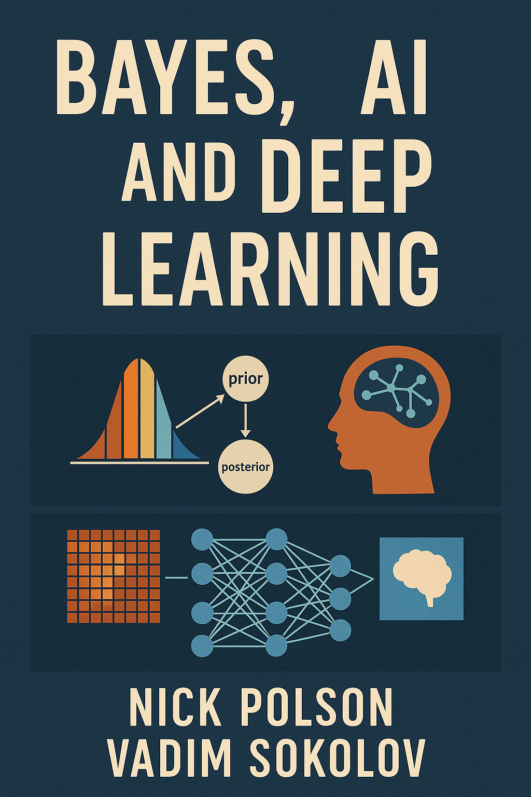

Bayes, AI and Deep Learning
Foundations of Data Science
Preface

Welcome to the fascinating world of Bayesian learning, artificial intelligence, and deep learning! This book is your guide to understanding these powerful tools and their applications in various fields. This book is a culmination of our experiences teaching these exciting fields to two distinct audiences: business school students at the University of Chicago and engineers at George Mason University.
This unique blend of perspectives allows us to present these complex concepts in a way that is accessible to data scientists, business professionals and technical experts. Whether you’re a manager seeking to leverage AI in your organization or an engineer building the next generation of intelligent systems, this book has something for you.
Techniques discussed in this book emerged as a transformative force in modern society, and its impact on automation is undeniable. From self-driving cars to virtual assistants, these technologies are already a part of our daily lives. In the coming years, they will become even more ubiquitous, impacting every industry and aspect of our lives. Understanding these technologies is essential for anyone who wants to stay ahead of the curve.
Through its ability to learn, adapt, and make decisions, AI is accelerating the pace of automation across various industries and sectors. This impact is multifaceted, encompassing both positive and negative aspects that warrant careful consideration. AI algorithms can analyze vast amounts of data to identify patterns and trends, providing valuable insights for informed decision-making. This leads to better resource allocation, optimized processes, and improved outcomes across various domains. Chatbots and virtual assistants powered by AI can handle customer inquiries and provide support 24/7, offering a personalized and efficient experience. It even works on Jewish holidays! This improves customer satisfaction and loyalty, ultimately benefiting businesses.
As a result, AI enables the creation of entirely new business models and industries that were previously not possible. This disrupts traditional markets and creates opportunities for innovation and growth. AI is driving significant progress in fields like self-driving cars, personalized medicine, and space exploration. This has the potential to revolutionize these industries and improve lives in numerous ways.
The term AI has morphed over time. It was first coined in 1956 by John McCarthy, who defined it as “the science and engineering of making intelligent machines.” Since then, the field has evolved significantly, and the definition of AI has changed accordingly. Today, AI is a broad field that encompasses various subfields, including machine learning, deep learning, and natural language processing. These subfields are often used interchangeably, but they are not the same thing. Machine learning is a subfield of AI that focuses on algorithms that can learn from data. Deep learning is a subfield of machine learning that uses artificial neural networks to learn complex patterns and relationships in data. Natural language processing is a subfield of AI that focuses on algorithms that can understand and generate human language.
Since 1956, the field of artificial intelligence (AI) has undergone significant transformations traditional AI was mostly focused on rule-based systems and boolean logic programming, with limited learning capabilities. It lead to them being brittle in changing environments. On the other hand, emerging AI is focused on modeling uncertainties, pattern matching, and deep learning. All of those are data-driven approaches. These approaches are more adaptable and can handle complex and unstructured data. They are also more data-dependent and lack interpretability.
This book is based on the lecture notes from our courses, which have been refined and expanded over years of teaching. We have incorporated valuable feedback from students, both at the University of Chicago and George Mason University, to create a comprehensive and engaging learning experience. This book is organized into three parts:
- Part 1: Bayesian Learning: This part covers the basics of probability and Bayesian inference.
- Part 2: Artificial Intelligence: This part explores the core concepts of AI such and mostly focuses on pattern matching techniques such as decision trees and generalized linear models.
- Part 3: Deep Learning: This part delves into the world of deep learning, focusing on the architecture and training of deep neural networks. It covers convolutional neural networks, recurrent neural networks, and generative adversarial networks.
This work is inspired by the contributions of many great thinkers in the field of AI and machine learning. We acknowledge the foundational work of pioneers such as: Shannon (Reinforcement Learning), von Neumann (Theory of Choice), Bellman (Optimality and Learning).
The evolution of AI can be summarised in three stages:
- Search. Started with one question and webpages ranked by relevance. Larry Page and Sergey Brin developed PageRank algorithm that uses power iterations to rank webpages by relevance. The statistical tools such as Kendall’s tau and Spearman’s rank correlation were used to measure the similarity between the ranking and the actual relevance.
- Suggestions. The first popular suggestion algorithm was developed by Netflix. It used collaborative filtering to recommend movies to users based on their viewing history and the viewing history of other users. The idea was to minimize the burden on the user to search for movies to watch.
- Summaries. Current AI systems like ChatGPT and Perplexity have revolutionized how we interact with information by excelling at summarization and generalization. These large language models can take vast amounts of complex information and distill it into clear, coherent summaries that capture the essential points while maintaining accuracy. They can generalize across different domains, connecting concepts from various fields and providing insights that might not be immediately obvious. For example, ChatGPT can summarize lengthy research papers into key findings, while Perplexity can synthesize information from multiple sources to provide comprehensive answers to complex questions. This ability to summarize and generalize represents a significant leap forward from simple search and recommendation systems, as these AI agents can now act as intelligent intermediaries that understand context, identify patterns, and present information in ways that are most useful to users.
First it was one question and one answer, next it was suggestions. You do not know what to search for, collaborative filtering, recommender systems, and search engines. Now, it is summarise, you are the manager of AI agents agents interpret your request, formulate a plan and necessary questions, and then execute the plan. This is the future of AI, where agents can work together to solve complex problems and provide valuable insights.
Bayesian learning is a powerful statistical framework based on the work of Thomas Bayes. It provides a probabilistic approach to reasoning and learning, allowing us to update our beliefs about the world as we gather new data. This makes it a natural fit for artificial intelligence, where we often need to deal with uncertainty and incomplete information. Artificial intelligence (AI) is a vast field that seeks to create intelligent agents capable of performing tasks that typically require human intelligence. These tasks can include perception, reasoning, learning, problem-solving, decision-making, and language processing. AI has made significant progress in recent years, driven by advances in computing power, data availability, and algorithms. Deep learning is a subfield of AI that uses artificial neural networks to learn from data. These networks are inspired by the structure and function of the human brain and have the ability to learn complex patterns and relationships in data. Deep learning has achieved remarkable results in various tasks such as image recognition, natural language processing, and machine translation.
The world of business and engineering are increasingly intertwined, as AI becomes an essential tool in both domains. This book bridges the gap between these disciplines by demonstrating how Bayesian learning, AI, and deep learning can be applied to address real-world challenges in:
- Business: Market analysis, customer segmentation, risk management, and strategic decision-making.
- Engineering: Robotics, image recognition, natural language processing, and data-driven automation.
Key Features of This Book:
- Accessible explanations: We break down complex concepts into manageable chunks, using real-world examples and analogies to illustrate key principles.
- Case studies: We showcase practical applications of Bayesian learning, AI, and deep learning across diverse industries.
- Hands-on exercises: We provide practical exercises and code examples to help you apply the concepts covered in the book to your own projects.
Joining the AI Revolution:
The field of AI is rapidly evolving, and this book equips you with the knowledge and skills necessary to stay ahead of the curve. Whether you’re looking to enhance your business acumen or advance your engineering career, understanding the power of Bayesian learning, AI, and deep learning is crucial.
We invite you to join us on this exciting journey and discover the transformative potential of these powerful tools!